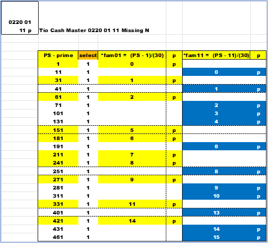
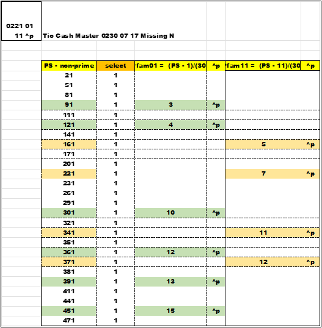
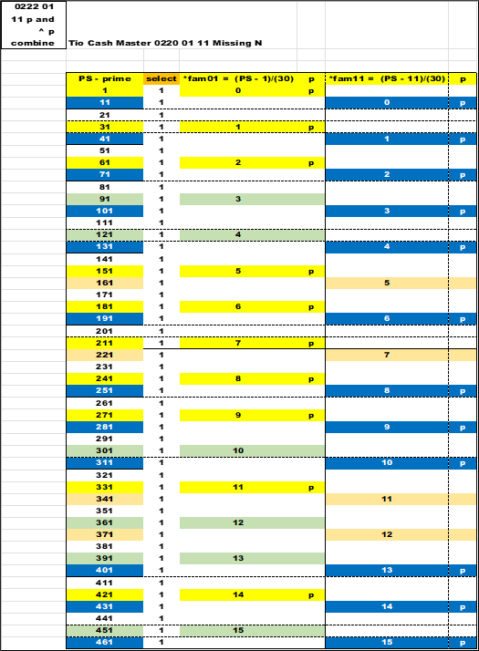
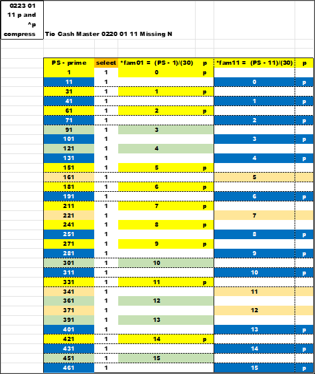

Using the filter from the prior chapter and another look at the PS (Prime Suspect) and PSL (Prime Suspect Level) or MN (Missing Number). This chapter will compare *fam01 and *fam11 , subsets of *1 (*wildcard1).
This is a further check on PSL and NM using color to distinguish the data.
The filter is set for *1 , and the equations solution are in different colors. *fam01 and *fam11 for prime (p) and non-prime (^p) will display the PSL or MN.
There are four charts:
01 11 p - prime
01 11 ^p - non-prime
01-11 p and ^p combine
01-11 p and ^p compress
These same chart formats will carry over for the other *fam.
The first two generate the data ; the third joins the data (sort together). The final chart will eliminate (sorts out) non-solution data - remember the 1/3's.
Using sorting and color to validate the equations with a different view. Push , pull the data to test it.
The first chart is the prime (p) numbers that satisfy *fam01 and *fam11.
The *fam01 primes are in yellow.
The *fam11 primes are in blue.
The second chart is the non-prime (^p) numbers that satisfy the *fam01 and *fam11. The *fam01 non-primes are green. The *fam11 non-primes are an off-yellow color. Any value not calculated will be empty and white - remember the 1/3's.
Next , combine all the data (sort together) and sort in PS order. All the prime and non-prime PSLs are present and in sequential order for both *fam.
Finally , sort off the blank data , the unwanted 1/3. Compress the data to show only *fam01 and *fam11 data. The view now revels p and ^p for *1 by *fam.
Again , there is order here.
 next